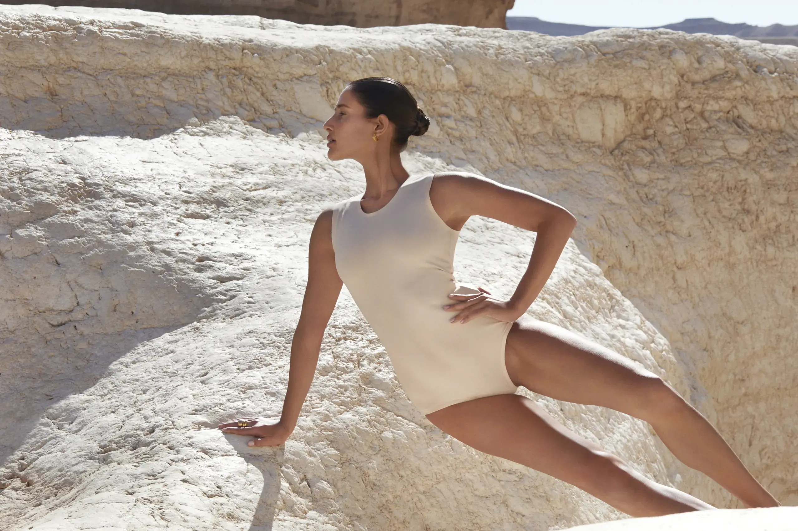
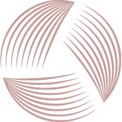
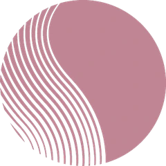
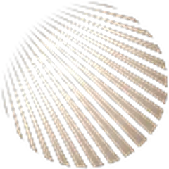
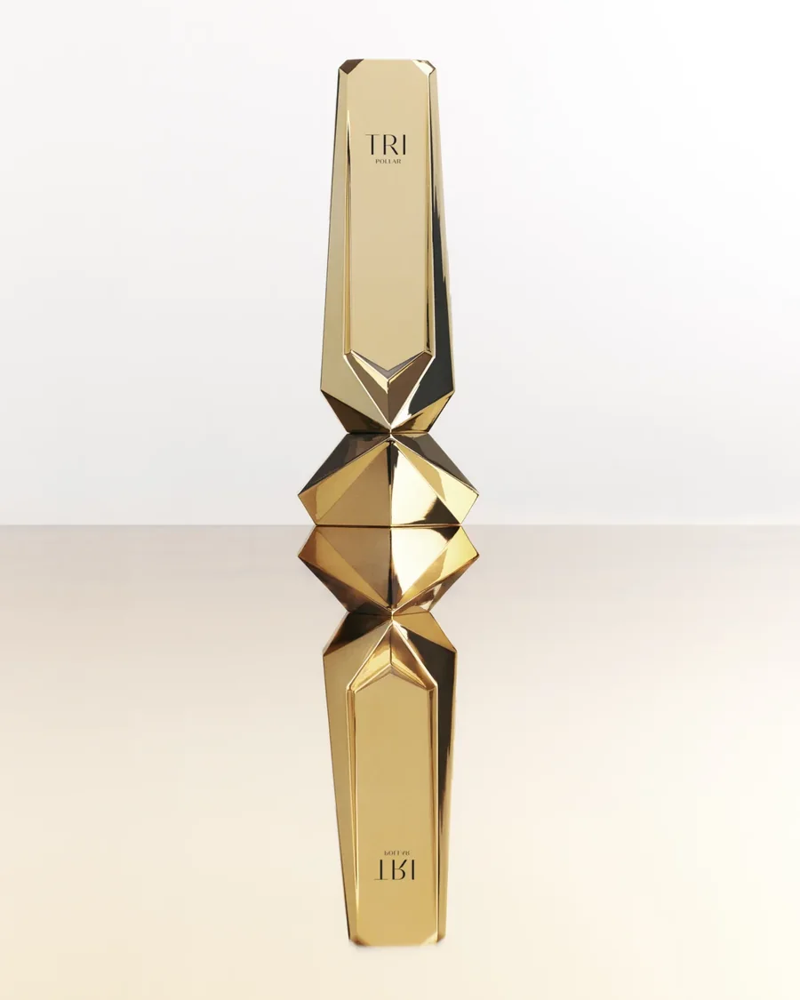
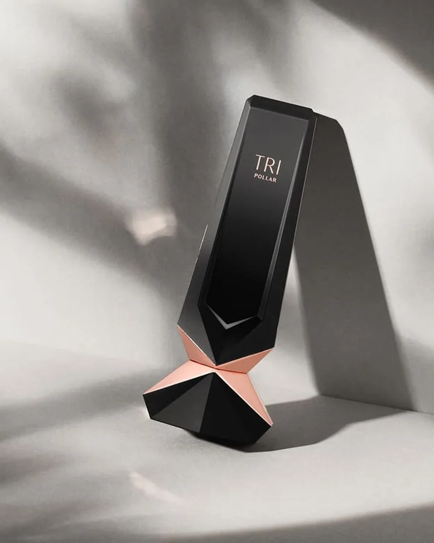
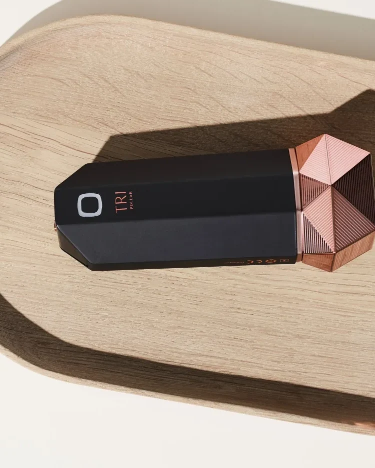
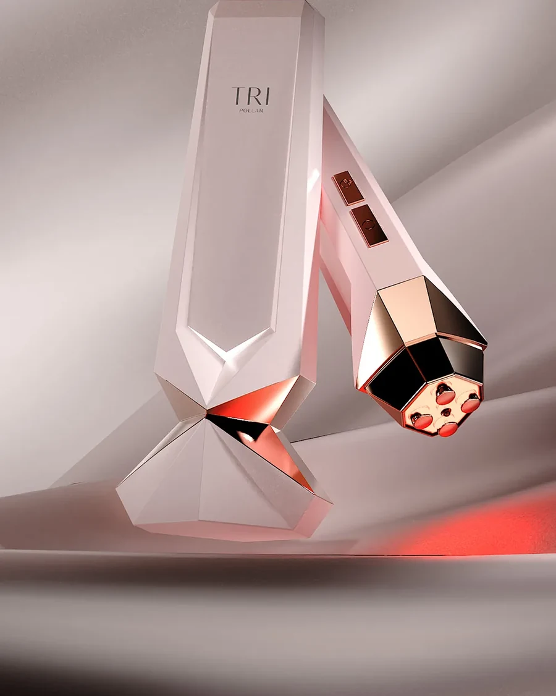
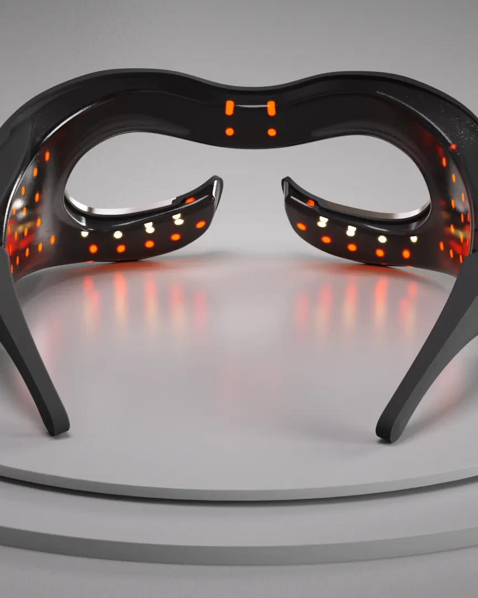

Firmer, smoother- looking skin with at-home RF.
TriPollar home use devices are FDA-cleared and dermatologist approved, with visible results in 6 to 8 weeks of consistent use. About 9 minutes a session, no clinic visit required.
Find Your Device → anchors to the device finder on this page. Get in Touch → set to pollogen.com/contact-us/ for now; POL to confirm the destination (a TriPollar consumer contact may be preferred).
Why TriPollar?
TriPollar brings professional-inspired beauty technology into everyday life. Every device is built for home use, so firming and smoothing your skin fits around your schedule, not the other way around.
TriPollar home use devices for face and body are built on the same RF technology used in professional treatment rooms, adapted to be simple and comfortable at home.
The Technology Behind TriPollar
TriPollar devices use RF (radiofrequency) energy, a gentle warmth that works beneath the surface to support the skin’s natural firming process. Some devices add DMA, a muscle toning technology, or LED light, which works alongside RF for an extra layer of care. Each technology plays a different role, so you can choose what fits your goal.
-

01RF (Radiofrequency)
Gentle warmth that works beneath the surface to help firm and smooth skin over time.
-

02DMA
Works with the muscle layer beneath the skin for a toning effect.
-

03Red LED
630nm red light that works alongside RF in Aura, for a more radiant look.
Marks are Pollogen’s own icon family from pollogen.com/technologies (Multi-RF, DMA, LED) — the same files used on the HUD partnership page.
Explore the TriPollar Range
Every TriPollar device targets a specific area and goal. Here’s a closer look at each one.
Each Learn More points at that device’s own page on pollogen.com (STOP Vx2 S lives at /products/tripollar-stop-vx2/). Images: Gold, Pose Vx, Aura and Prism are from their pollogen.com product pages; the STOP Vx2 S frame is the mytripollar.com STOP Vx 2 listing photo — POL to confirm it is the same device. The chips on the images use the finder’s own focus areas.
-

Face and jawlineTriPollar STOP Vx2 Gold
Face and jawline firming.
RF and dynamic muscle activation, with 24K gold-plated electrodes.
RF + DMA · About 9 minutes
-

Face and jawlineTriPollar STOP Vx2 S
Face and jawline firming.
Multi-RF and Adaptive DMA, with a built-in light for easier use.
Multi-RF + DMA · About 9 minutes
-

BodyTriPollar Pose Vx
Body firming and smoothing.
Designed for the abdomen, thighs, and under-arms, to help firm and smooth skin with regular use.
-

Face and jawlineTriPollar Aura
Full face, all in one.
Aura combines RF, DMA and red LED light for a complete at home facial routine in one device.
RF + DMA + Red LED · About 9 minutes
-

Eye areaTriPollar Prism
Eye area, hands-free.
Made for the delicate eye area, with multi-spectral LED, hands-free in about 3 minutes.
Find Your TriPollar
Three quick questions. One device made for you.
Works with no JavaScript (CSS :has()). Change any earlier answer and the questions and result below it re-route on their own. Eye area and Body resolve after one question, per the copy doc’s logic.
TriPollar Prism
Eye area, hands-free.
Made for the delicate eye area, with multi-spectral LED, hands-free in about 3 minutes.
TriPollar Pose Vx
Body firming and smoothing.
Designed for the abdomen, thighs, and under-arms, to help firm and smooth skin with regular use.
TriPollar Aura
Full face, all in one.
Aura combines RF, DMA and red LED light for a complete at home facial routine in one device.
RF + DMA + Red LED · About 9 minutes
TriPollar STOP Vx2 Gold
Face and jawline firming.
RF and dynamic muscle activation, with 24K gold-plated electrodes.
RF + DMA · About 9 minutes
TriPollar STOP Vx2 S
Face and jawline firming.
Multi-RF and Adaptive DMA, with a built-in light for easier use.
Multi-RF + DMA · About 9 minutes
What People Are Saying
Video slots — placeholders. From the copy doc, not for publication: @its.angel.jade (STOP Vx2 Gold routine) — her video says “5 minutes”, so it needs a caption or edit, since that conflicts with the 9-minute fact. @srta_palo (STOP Vx2) — her on-screen facelift comparison should be cut or approved first. Drop the approved MP4s in as <video controls playsinline poster> in place of the blurred backdrops.
- 31%improvement in skin firmness
- 22%increase in skin elasticity
- 97%satisfied with their skin’s elasticity, smoothness, and radiance
FDA-cleared and dermatologist approved by Dr. Hadley King.
Third-party clinical study by SGS, 33 participants, 28 days of use. Individual results may vary.
Dr. Hadley King portrait is the one mytripollar.com already uses on its homepage (600×600).
How TriPollar Fits Into Your Day
Watch how to use each deviceNeeds a destination. A how-to video hub or playlist. Pollogen’s media library already holds a Pose Vx How-To (3840×2160) and Technology film; the others would need sourcing.
-
Cleanse
Start with clean, dry skin.
-
Apply gel
Apply the TriPollar conductive gel to the treatment area.
-
Treat
Treat for about 9 minutes, right at home.
-
Go
Continue your day. No downtime, no clinic visit.
The Technology Behind the Brand
TriPollar is part of Pollogen, a beauty technology company with a professional heritage spanning clinics and homes around the world. The same RF technology used in professional treatment rooms is built into every TriPollar device, adapted for home use.
Every TriPollar device is FDA-cleared.
Photo: a professional Pollogen treatment from the pollogen.com library, used for “professional treatment rooms”. FDA icon: the one on the mytripollar.com homepage. POL to confirm a professional-system image is fine on a consumer page.
Frequently Asked Questions
How does TriPollar work?
TriPollar devices use RF energy, and in some devices DMA or LED, to work beneath the skin’s surface and support its natural firming process over time.
Which TriPollar device is right for me?
It depends on your goal. STOP Vx2 is built for full face firming, Aura combines RF, DMA and LED for an all-in-one routine, Prism focuses on the eye area, and Pose Vx is designed for the body. Not sure which is the best fit for you? Use the Find Your Match guide above.
How often should I use it?
Each device has its own recommended schedule, which you’ll find in its user guide.
How long does a treatment take?
Most treatments take about 9 minutes, so it fits easily into a home use routine.
Is it easy to use at home?
Yes. TriPollar devices are designed for home use, with simple steps you can do yourself, no professional needed.
What can I expect?
Many people begin to notice firmer, smoother skin within 6 to 8 weeks of consistent use. Results vary by person and consistency of use.
Is TriPollar safe?
TriPollar devices are FDA-cleared and designed for comfortable use at home.
Where can I find TriPollar reviews or buy TriPollar?
Ready to firm and smooth, on your own time?
Explore the TriPollar range and find the home use device that fits your goals.
Shop TriPollarNeeds a destination. mytripollar.com is the US store, but today it only sells STOP Vx 2 and the Activator Gel — POL to say where the full range is bought.